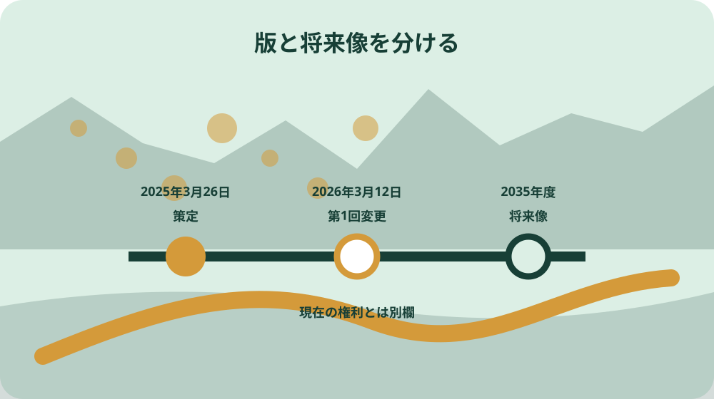

先に結論を確認する
この記事の答え：一筆ごとに、登記等で別に確認する所有者、現在の耕作者、目標地図上の将来の担い手、参照資料の更新日を四欄で分けます。地図の表示番号を農業を担う者一覧へつなぎますが、目標地図を所有権や貸借権の証明には使いません。
森町で最初に照合する条件：森町が公開する地域計画、農業を担う者一覧、目標地図を同じ更新時点の一組として保存する。
結論は所有・現在・将来・更新日の四欄照合票
森町の地域計画を自分の農地に引き寄せて読むときは、地図を眺めて終わらせず、一筆一行の照合票を作ります。中心となる欄は、所有者、現在の耕作者、目標地図に示された将来の担い手、参照資料の更新日です。四つを横並びにすると、誰の土地かという話と、誰が将来耕す想定かという話を混同しにくくなります。
森町は目標地図を、10年後の一筆ごとの耕作者を示す地図と説明しています。一方、目標地図そのものは登記事項証明書でも貸借契約書でもありません。照合票の表題にも『地域計画確認用・権利証明ではない』と書き、地図の表示から現在の権利者を逆算しない使い方を徹底します。
照合票には、対象筆の所在・地番、地図ページ、表示番号、担い手一覧の対応番号、確認できた将来の作物や面積、確認者、確認日を置きます。所有者と現在の耕作者は別の手元資料や当事者確認から記入し、根拠資料名も欄内へ残します。空欄があっても推測で補いません。
この記事が目指す成果物は地域計画の一般解説ではなく、家族、土地所有者、耕作者、相談先が同じ一筆を指して話せる照合票です。売買、貸借、相続、営農継続の結論を出す紙ではなく、事実の食い違いと森町へ確認する質問を早く見つける入口として使います。
対象農地を所在・地番ごとに一行へ固定する
最初に手元の農地を所在・地番ごとに並べます。自宅から見た通称、家族内の呼び名、道路沿いといった表現だけでは、目標地図のどの区画を見ているか後で再現できません。固定資産の課税明細、登記事項、公図、農地関係の通知など、何を見て地番を転記したかも併記します。
一枚の田に見えても登記上は複数筆である場合、逆に一筆の一部だけを耕している場合があります。照合票では見た目の一枚にまとめず、一筆を基本単位にします。現況の畦、進入路、水路、隣接筆との位置関係は備考図へ描き、地番そのものと現地の目印を別情報として扱います。
対象筆が目標地図のページ境界にある、縮尺上の線が読みにくい、表示番号が重なっている場合は、確定欄へ入れません。地図のページ番号とおおよその位置を画像の切り抜きではなく参照メモで残し、地番を示して農林課へ問い合わせるための保留行にします。
所有地だけでなく、借りて耕作している筆、作業だけ請け負っている筆、他者へ貸している筆も区別して候補へ入れます。地域計画の担い手一覧は経営面積と作業受託面積等を分けていますから、自分の関わり方を一語の『管理』でまとめず、所有・貸借・作業受託のどれかを備考へ記します。
地域計画・担い手一覧・目標地図の役割を分ける
森町は地域計画、地域内の農業を担う者一覧、目標地図を別ファイルで公開しています。地域計画は区域全体の課題、将来方針、集積目標などを読む文書です。担い手一覧は経営体ごとの属性や現状・将来の作物と面積を整理し、目標地図はそれを場所へ対応させる役割があります。
三つを一つの資料だと思うと、地図に書かれていない面積や方針を地図から読み取ったつもりになりがちです。照合票の根拠欄を『計画書』『担い手一覧』『目標地図』『手元の権利資料』に分け、どの記載がどの資料にあったかを短く書きます。
計画書は区域内の農用地等面積を890ヘクタール、担い手への集積率を現状66パーセント、将来80パーセントとしています。これらは森町区域の計画値であり、自分の一筆の面積や契約条件ではありません。地域全体の背景欄には書けますが、個別筆の確定値へ転記しません。
担い手一覧には171経営体が掲げられ、現状と将来の作物、経営面積、作業受託面積等が分けられています。個人情報へ配慮し、公開資料を無目的に複製した名簿を作るのではなく、自分が権利や耕作に関わる対象筆の照合に必要な番号と確認結果だけを扱います。
地図の表示番号を担い手一覧へつなぐ
目標地図には農地上に担い手を識別する番号等が表示され、担い手一覧には目標地図の表示番号に対応する欄があります。作業は、対象筆の地図上の位置を確認し、読めた番号を照合票へ写し、同じ版の担い手一覧で対応番号を探す順番にします。
番号が似ているときは拡大表示だけで断定せず、隣接地の形、道路、水路、周囲の番号配置を確認します。地図の線は境界確定図として使わず、位置を探す補助にとどめます。筆界や面積を確定する必要がある場面では、測量や登記に関する別資料を用意します。
番号から担い手一覧へ到達したら、表示番号、一覧上の属性、将来の作物、面積欄のうち対象筆の照合に必要な点だけを記します。一覧にある経営面積全体を、その一筆の面積だと読み替えません。経営体全体の値と対象筆の値を同じ欄へ置かないことが大切です。
地図番号がない、一覧に同じ番号を見つけられない、同じ場所に複数の表示がある場合は『不一致』ではなく『未照合』とします。問い合わせ票には対象地番、地図ページ、周辺の目印、読めた番号、参照ファイルの取得日を載せ、森町が同じ画面を再現できる状態にします。
所有者と現在の耕作者を同じ人と決めない
農地では、登記上の所有者、固定資産関係の宛名、貸借の当事者、現地で作付けする人、作業を受託する人が一致しないことがあります。照合票はこれらを『関係者』の一欄に押し込めず、少なくとも所有者と現在の耕作者を分けます。
所有者欄は登記事項など確認した資料名と確認日を付け、現在の耕作者欄は本人への確認、契約書、農地関係の手元資料など根拠を明記します。家族の記憶だけなら『家族聞き取り・要確認』と書き、確定情報と同じ見た目にしないよう記号を変えます。
担い手一覧に載る名称や地図番号は、将来の農地利用を話し合った計画上の情報です。それを見て、今の貸借契約が成立している、所有権が移った、農地を直ちに引き渡す必要があるなどと判断してはいけません。権利と計画を別の列に置く設計が誤読を防ぎます。
所有者が亡くなっている、共有名義、契約期間が不明、耕作者が変わったという事情を見つけたら、照合票に赤字の結論を書かず『別手続の確認事項』へ送ります。地域計画の確認を相続、貸借、農地法上の判断の代わりにせず、必要な窓口相談を切り分けます。
2035年度の将来像を現在の契約と混ぜない
森町の地域計画は2035年度を目標年度としています。この年月を照合票の見出しに置き、将来欄の情報が今日の耕作者や契約を示すものではないと明確にします。作成日現在の欄と2035年度の目標欄を横に置けば、時間軸の違いが目で分かります。
計画書は農地中間管理機構を介した貸借と、段階的な農地の集約化を進める方針を示しています。ただし、方針が書かれていることと、特定の一筆について貸借契約が完了したことは別です。契約日、期間、対象地番、当事者は契約資料で確かめます。
将来の担い手と現在の耕作者が同じなら一致と記録できますが、それでも権利関係が確認済みとは書きません。異なる場合も、直ちに変更が決まったとは決めず、話合いの状況、本人の認識、必要となる手続、想定時期を質問欄へ並べます。
家族で将来を話す際は、続けたい、貸したい、受けたいという意向と、公表済み目標地図の表示を別の付箋にします。両者が一致しないときこそ、照合票が役立ちます。誰かを責める材料ではなく、次の地域の話合いで確認する論点として扱います。
策定日と第1回変更日を資料の版として残す
森町の地域計画は2025年3月26日に策定され、2026年3月12日に第1回変更が行われています。照合票の右上には参照した計画書の策定日・変更日、三つのファイルを取得した日、照合作業をした日をそれぞれ書きます。
パソコンへ保存するときは、ファイル名だけで最新版と判断せず、資料内の年月日と森町ページの更新表示を確認します。地域計画、担い手一覧、目標地図を同じ日付のフォルダーへ一組で保存し、古い版は削除せず『旧版・参照終了』と明示します。
一部の資料だけを新しいものへ差し替えると、地図番号と一覧の対応がずれるおそれがあります。更新を見つけたら三資料を取り直し、自分の対象筆について表示番号、将来の担い手、作物等に差があるかを再照合し、変更前後を記録します。
更新日を残す目的は、常に新しいという印を付けることではありません。家族が後日見たとき、どの公表版を根拠に話したのかを再現するためです。電話で確認した事項も、確認日、担当部署、質問、回答の要点を資料版とは別の履歴へ残します。

番号なし・境界不明・読み取れない筆を保留する
目標地図を照合しても、対象筆の位置を特定できない、番号が読めない、担い手一覧へつながらない場合があります。そこで空欄、未照合、森町確認待ちの三つの状態を定義し、何も書かれていないことと、調べたが決められないことを区別します。
地図上の色や番号が筆界をまたいで見えても、その表示だけで境界や面積を確定しません。目標地図は将来の農地利用を示す資料として読み、境界の争い、売買面積、測量成果の判断へ転用しないことを保留欄の注意書きに入れます。
森町へ尋ねる際は『この辺は誰ですか』ではなく、所在・地番、目標地図のページ、近くの道路や水路、読み取れた番号、照合できなかった一覧箇所を示します。質問を具体化すれば、個人情報に配慮しながら資料の読み方を確認しやすくなります。
回答を得ても、口頭説明を地図原本へ直接書き込みません。照合票の回答欄へ確認日と要点を書き、必要なら公表資料の更新を待つ項目と、個別の事実確認だけで終える項目を分けます。後から公表版と個別メモを取り違えないためです。
話合いと更新の経緯を変更欄へ戻す
森町が示す地域計画の過程には、地域での話合い、結果公表、計画案、説明会や意見聴取、縦覧、策定・公告が含まれます。目標地図は一度作って固定するものではなく、地域の状況に応じて随時更新すると案内されています。
農林水産省の資料も、新規就農、農地転用、作付けの変化などを踏まえて計画を更新する考え方を示しています。照合票には『変更のきっかけ』『話した相手』『公表版への反映確認』の三欄を置き、個人間の相談と公表資料の更新を混ぜません。
耕作をやめたい、受け手を探したい、農地の一部に別の計画があるといった事情が生じたら、まず現在の権利と意向を整理します。目標地図の書換えだけを求めるのではなく、地域の話合い、農地中間管理機構、許可や届出の要否を森町へ確認します。
次の版で表示が変わったら、古い行を上書きせず変更履歴を追加します。変更前番号、変更後番号、資料の変更日、確認した理由を並べると、将来像がどう動いたかを家族や耕作者へ説明できます。変更理由を推測で書かないことも大切です。
家族・耕作者・相談先で同じ一件票を共有する
照合票は所有者だけが保管するのではなく、必要な範囲を現在の耕作者や家族とも確認します。全体名簿を配るのではなく、当事者が関係する一筆の行、参照した公表資料、未確認事項に絞り、個人情報を目的外に広げない共有方法を選びます。
話合いでは、最初に地番と現地位置、次に現在の耕作、最後に2035年度の目標表示という順で読みます。将来の担い手名から会話を始めると、今の契約や本人の意向を飛ばしてしまいます。時間軸を順にたどる進行表を照合票の裏面へ置きます。
森町へ相談するときは、照合票、対象筆の位置が分かる資料、地域計画等の取得日、質問一覧を持参します。所有権や契約の相談と、目標地図の読み方の質問を分け、どの部署・機関で何を確かめるかを面談後の行動欄へ書きます。
家族内で意見が異なる場合も、照合済みの公的記載、当事者の希望、未確認の推測を色分けします。公表資料にあることを理由に意向が確定したとは扱いません。照合票は合意書ではなく、合意前の事実整理票だと全員で確認します。
大石の視点：目標地図を権利証明へ変えない
ここまでの策定日、目標年度、区域面積、集積率、担い手一覧と目標地図の構成は公表資料で確認できる事実です。特定の一筆について誰が所有し、誰との貸借が有効かは、これらの公表資料だけから確定できる事実ではありません。
大石浩之の提案は、目標地図を見た瞬間に『将来この人の土地になる』と短絡せず、所有、現在の耕作、将来の担い手、更新日を四欄へ分けることです。これは森町の規定ではなく、家族間の誤解と相談時の手戻りを減らすための実務上の私見です。
地域の将来像を作る資料には、耕作を続けられる人と農地をつなぐ大切な役割があります。その価値を保つためにも、地図へ法的な効力があるかのような意味を足さないことが必要です。確認できない欄を残せる票の方が、すべて埋めた不正確な票より信頼できます。
私なら、相談前に対象筆を三件まで選び、四欄のうち埋まらない点を質問に変えます。全農地を一度に完成させようとせず、更新があった日と家族の節目に見直す運用にします。公的な判断が必要な箇所は必ず森町等の案内へ戻します。
照合票を貸借・相続・営農相談の入口へ渡す
完成した照合票の末尾には、次に確認する手続を一つずつ書きます。現在の貸借期間、相続後の名義、農地中間管理機構の利用、担い手との話合い、転用計画などです。ただし、照合票自体を申請書や契約書として提出するものとは位置付けません。
貸借の相談へ進むなら、対象地番、所有者、現在の利用、希望時期を別紙へ移します。相続の相談なら、亡くなった人の名義と相続関係の資料を別に用意します。目標地図上の将来の担い手欄は参考情報として出典日を付け、権利欄の根拠へ置き換えません。
紙で保管するときは表紙に更新期限ではなく次回確認のきっかけを書きます。地域計画の更新、契約満了、耕作者変更、相続、家族会議などです。データ版では個人名を含むため、共有範囲と保管場所を決め、公開資料のコピーと個別メモを分けます。
最終確認は、四欄が分かれているか、地図番号と一覧の版が一致するか、目標地図を権利証明と書いていないか、保留事項に相談先があるかの四点です。ここまでそろえば、地域計画を眺める資料から、一筆の将来を落ち着いて話すための実用的な入口へ変えられます。